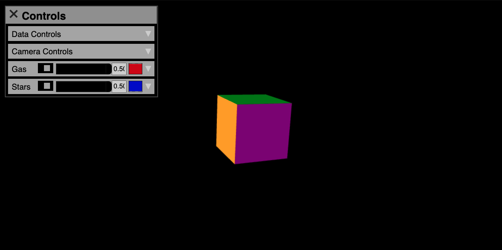

Interacting with a Firefly visualization¶
Flying with the mouse or keyboard¶
Trackball Controls¶
When you launch Firefly in the default configuration, you can use the mouse to rotate your view and zoom in and out. To rotate the view, left click and drag. To zoom, use the mouse wheel (or two-finger scroll). The default view uses the “Trackball controls” from the three.js library. Within this Trackball mode, your center is fixed, but can be moved with a right-click and drag. You are always looking toward that center. And you can rotate your view around that center.
Fly Controls¶
If you press the space bar, or use the user interface to uncheck the center Lock button, you will switch to the “Fly controls” from the three.js library.
Fly mode gives you more freedom to move about because you are not constrained to a center position as you are in Trackball mode.
Fly controls utilize the keyboard
W/A/S/D - pan forward/left/backward/right
R/F - pan up/down
shift - reduces your speed by a factor of 10 while held in conjunction with another key
in combination with the mouse.
up/down - pitch
left/right - yaw
If you are in Fly mode, pressing the space bar will return you to Trackball mode now centered at your current location.
Note
A common workflow is to use Fly controls to move the camera into the region of interest then press the space bar to switch to Trackball mode. This will lock the center on your region of interest. Now in Trackball mode, you can “orbit” that region of interest, while always facing it.
Tweening¶
When the T key is pressed on the keyboard the camera’s position
and orientation will be smoothly adjusted according to the keyframes
defined by the user in the TweenParams.
See the frontend documentation for details.
Using the user interface¶
The top bar¶
This contains the word Controls and an X or “hamburger” symbol. Click in here to show or hide the Controls panel. If you click and drag in the top bar, you can move the Controls panel. The user interface (UI) initializes in a collapsed state by default in the top left corner of the screen (represented by three vertically stacked black lines– a “hamburger”).
Clicking on the hamburger will expose a number of “sub-panels” depending on how the number of groups of particles loaded in the dataset. Each will have a dropdown arrow that when clicked will reveal sets of buttons, sliders, and/or input boxes. For all input boxes, you must hit “enter” on your keyboard for the value to actually be recorded by Firefly.
Warning
A common point of confusion is when input boxes don’t seem to update the view. Almost always, the culprit is that the “enter” did not register, If something is not updating try hitting enter a couple more times. If the issue persists submit a GitHub issue and select the appropriate issue template.
Sub-panels¶
Splitting the Viewer and GUI with Flask¶
When Firefly is being hosted locally using a Flask server
(see Hosting Firefly locally for details on how to accomplish this)
the UI and viewer canvas can be split by visiting
localhost:xxxx/gui and localhost:xxxx/viewer.
The GUI will contain a multi-colored cube to help identify how the the scene is being rotated.
All of the controls detailed in the sections above apply for
the localhost:xxxx/gui window.
The localhost:xxxx/viewer window on the other hand will show only
the particles and will react to any changes made on the viewer.
Note
Two devices on the same network can access the same Firefly webserver.
Using one computer as the host which opens the
localhost:xxxx/viewer and another device (say, an iPad)
which opens <host's ip address>:xxxx/gui the view can
be remotely controlled.
See also
This is not actually limited to only computers on the same network, if the host exposes their IP address to the internet by opening a port on their router then one’s Firefly view could be controlled remotely by another user over the internet. See Accessing remote Firefly servers via port forwarding.